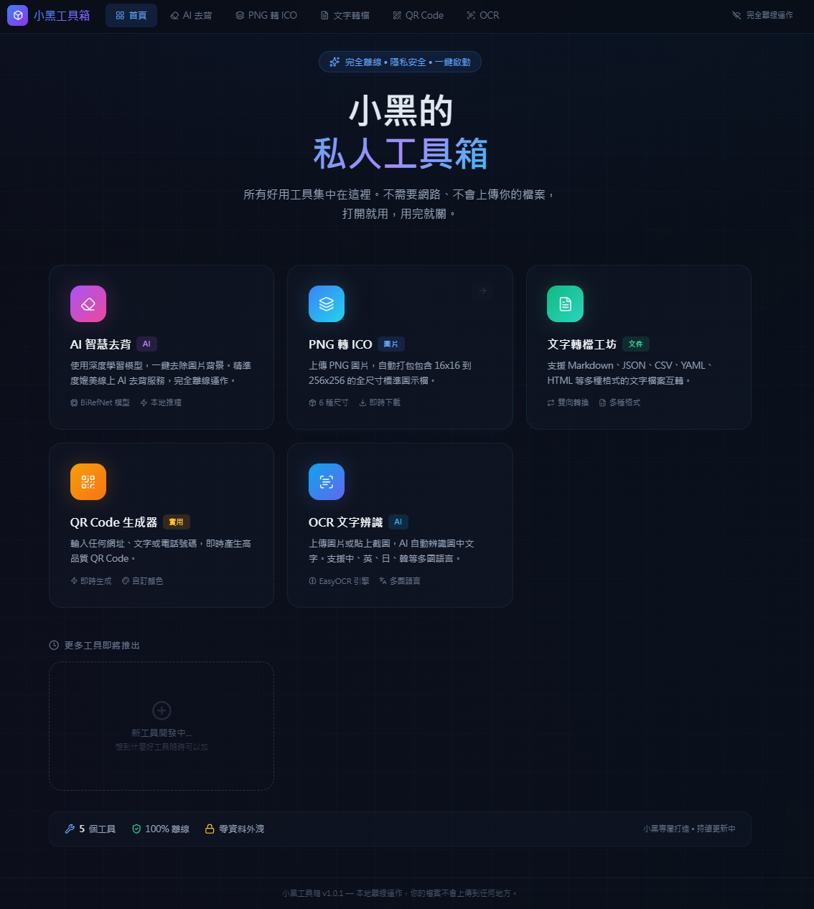
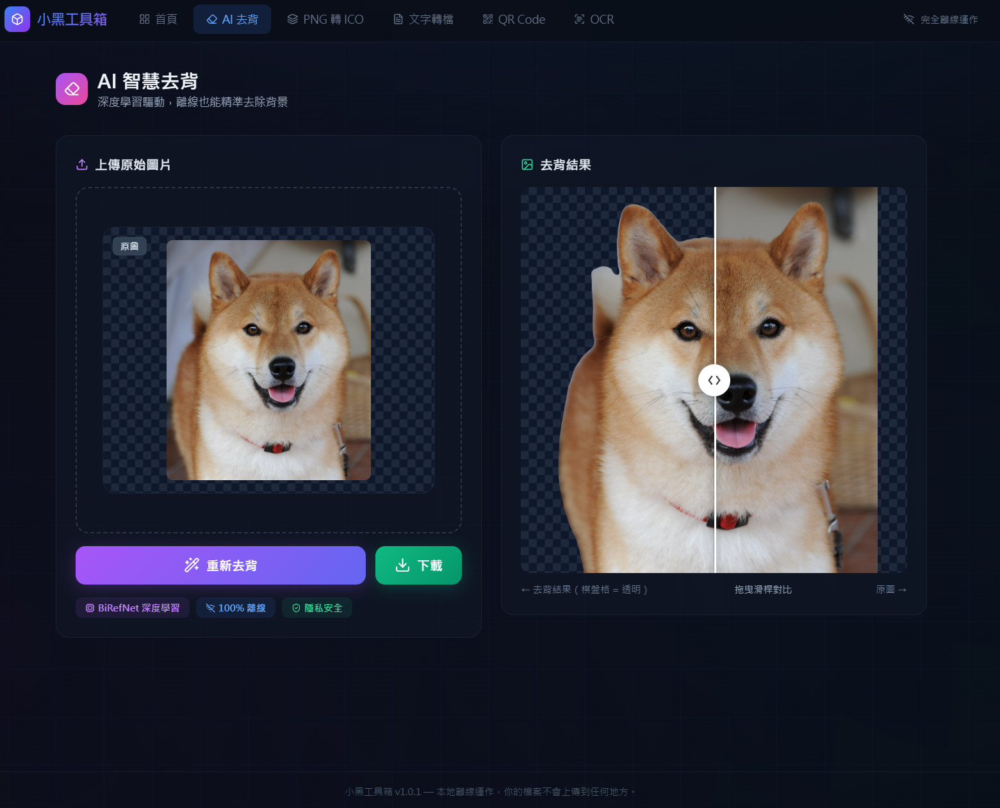
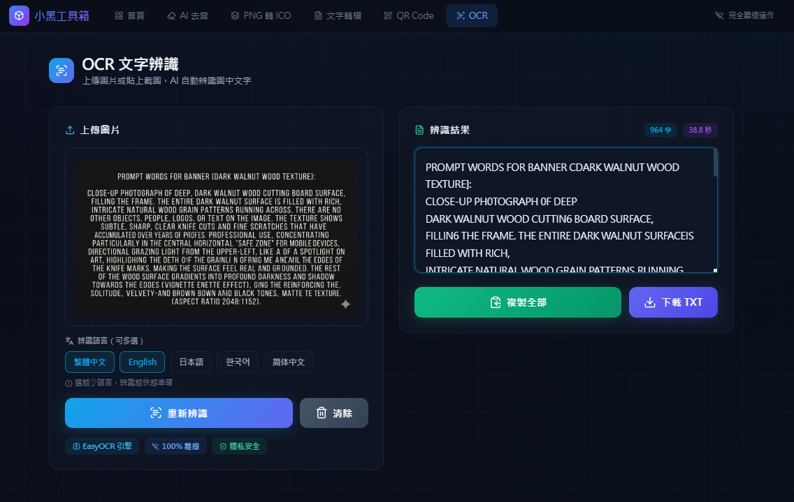

工具箱採用「本機伺服器 + 瀏覽器」設計：程式在你的電腦上啟動一個小型 Flask 伺服器，瀏覽器自動打開操作介面，所有運算都在本機完成。
| 作業系統 | Windows 10 / 11（64 位元） |
| 硬碟空間 | 約 500 MB |
| 網路 | 不需要（首次使用 AI 功能時需下載模型） |
| 安裝方式 | 解壓即用，不需安裝 Python 或任何額外套件 |
| 自動更新 | 內建差分更新，只下載變動的檔案 |
v1.0.0 ｜ Windows 10 / 11 ｜ 約 500 MB ｜ 解壓即用